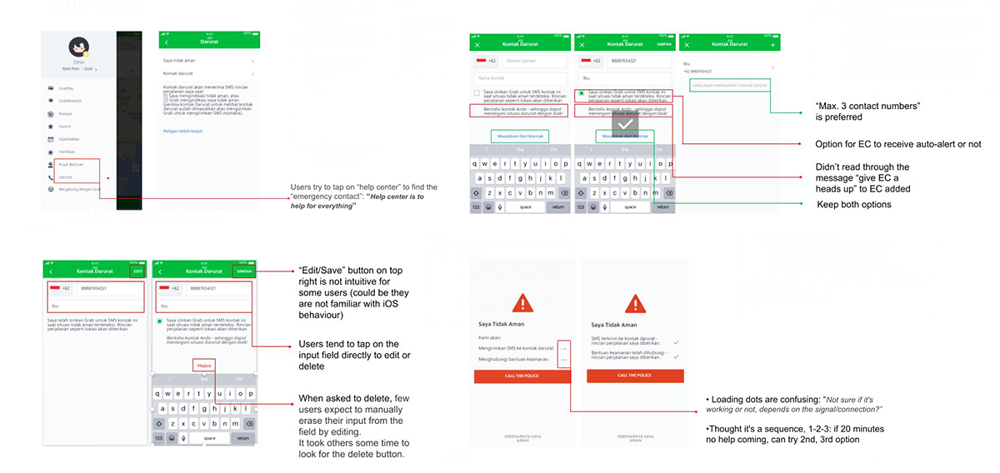

SOS Emergency Alert provides the passenger a way to ask for help in the situation of distress and they are not able to make a phone call. The alert could be sent to police hotline number as well as configured list of emergency contacts. Emergency alert would contain information like share my ride URL, driver details, vehicle info etc.
2017
UI/UX
SOS Button MVP provides a way for a passenger under distress to connect to the national hotline based on his/her current location. But in many cases, the victim is not in a position to talk and sending a text based alert is the only thing that she could do.
Currently about 70% of the Emergency button clicks end up not proceeding with call to Police. Passenger may not be in the position to describe her current location or even talk in some emergent situations. Focused user study has revealed that Grab should be able to do more than call to Police in the case of emergency.
We conducted design workshop to role play and talk through different emergency scenarios, to assess the usefulness, appropriateness and usability of the SOS Emergency Alert concept from a customer point of view.
As an outcome of the workshop, we drafted different user flows following different scenarios to identify major touch points and impacts to the ‘actors’ involved in the emergency service system.
We conducted design review using low-fidelity wireframes to get feedback from the working team, especially for engineers to understand the design scope and to plan their ahead.
We conducted usability testing with both new and existing customers to understand: user's email behaviour, consideration and usage and to verify the UX flow, visuals and content.
